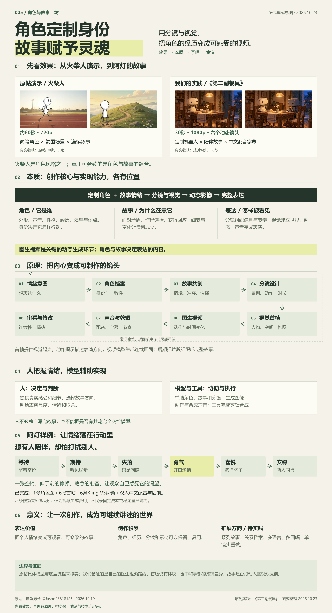
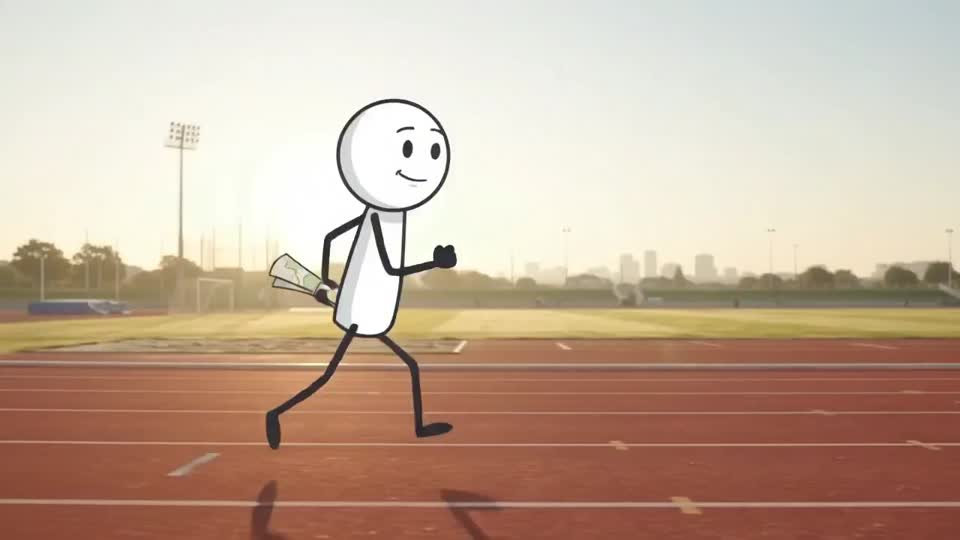

外形让人认出它，
渴望让人理解它。
阿灯的白色外壳、绿围巾是识别；想有人留下、又害怕打扰别人，才决定了它怎样行动。
以定制角色配合故事，
经分镜、视觉、图生视频与配音剪辑，
把情绪变成作品，积累可延续的角色与素材。
建议打开声音，听见它的停顿。
THE RESEARCH MAP / 一图读懂

PROJECT DIRECTORY / 成果索引
角色外形、身份、渴望与顾虑，以及旅者的区别。
角色设定与参考图 ↗ 02 / STORY从默默等待到主动邀请，让情绪落在具体行动里。
完整故事与情绪变化 ↗ 03 / STORYBOARD景别、动作、声音、首帧与对应成片，一起看。
分镜方案 · 6张首帧 ↗ 04 / MOTION六条独立生成的视频，保留剪辑与配音前的输出。
原始片段 · 单镜头测试 ↗ 05 / SOUND两种中文声音、四句对白，以及可下载的字幕。
试听对白 · 字幕文件 ↗ 06 / PROCESS从角色参考到成片，保存准确指令、剪辑与验证记录。
创作方案 · 提示词 · 清单 ↗WHAT WE LEARNED / 核心理解
人把握情绪，模型辅助故事和分镜，
图生视频实现动态表达。
阿灯的白色外壳、绿围巾是识别；想有人留下、又害怕打扰别人，才决定了它怎样行动。
一张空椅、伸手前的停顿、略急地擦杯子，让“想被关心”变成可以看见的选择。
图生视频解决动作与时间变化。情绪来源、故事选择、表演尺度与剪辑取舍仍需要判断。
FROM IDEA TO FILM / 制作路径
已验证实际视频生成、中文配音、字幕、30秒拼接，以及网页播放与按镜头跳转。音轨做过自动转写核对。
仍有边界杯子花纹、围巾与手部存在轻微跨镜差异；这是一部完成的首版样例，并不代表完全稳定的自动生产能力。
制作成本六条视频合计528积分。此数仅为视频生成扣费，不是全部制作成本；准确记录可在资料页查看。
RESEARCH ORIGIN / 研究起点

原帖演示 · 约60秒 · 720p ↗原帖研究 / 火柴人动画工坊
保留原始演示、三个镜头观察、自动制片流程的作者描述，以及我们对角色、故事和图生视频的讨论。
原帖由摸鱼局长发布。具体生成模型与“不到10分钟”主张未独立核实；与我们制作的阿灯故事分别记录。
进入原帖与完整研究 ↗查看原帖 ↗NEXT CHAPTER / 继续研究
优先改善跨镜头一致性与声音表演，再尝试同一角色的第二个故事。多语言、竖屏重构和批量生产，保留为后续方向。